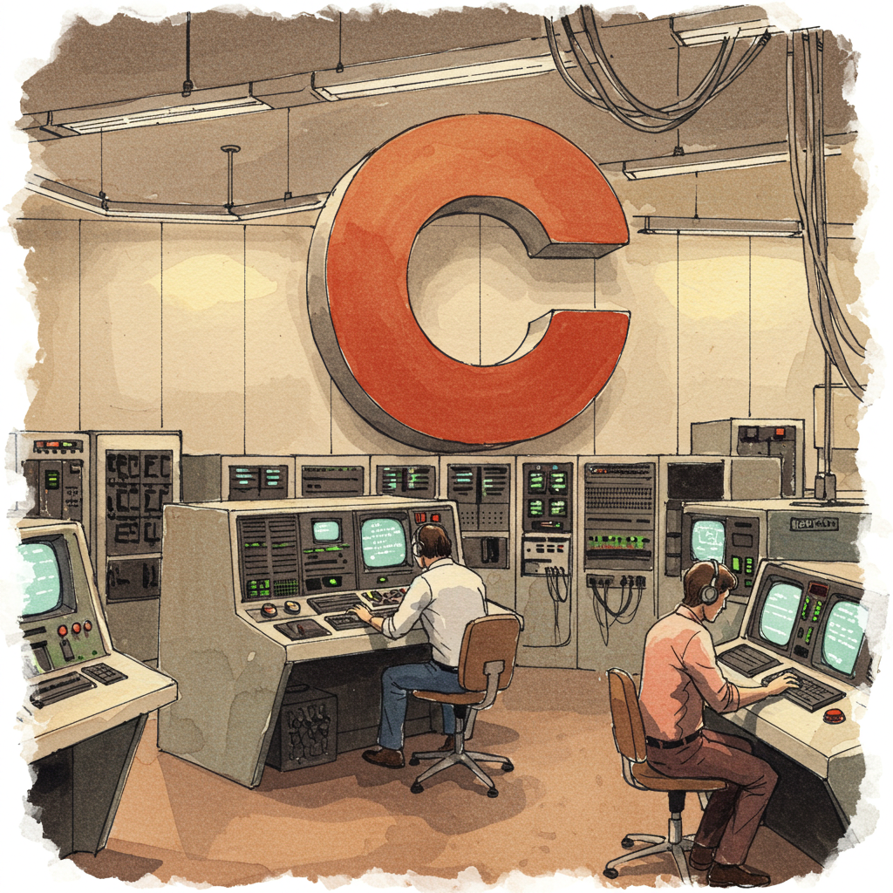

Author’s Note: I’m excited to share this series on C programming as I learn along the way. I might make mistakes, so please point them out if you find any areas for improvement. Happy coding and thank you for your support!
Introduction
Organizing your programs is a key habit that improves readability, maintainability, and overall code quality. As a beginner in C programming, one of the most powerful tools you will learn is how to use functions in C. Functions allow you to segment your code into reusable parts that perform specific tasks. This guide will walk you through the basics of declaring, defining, and calling functions in C with clear and concise examples. Whether you’re writing a small program or a more complex application, understanding functions is essential.
What Are Functions in C?
In C programming, a function is a self-contained block of code that performs a specific task. Functions can:
- Accept input parameters (data passed to the function),
- Process information using code inside the function, and
- Return a result or perform an action without a direct output.
Think of each function as a mini-program dedicated to one task. For beginners, the most basic function is the main() function, which is where every C program starts. However, as your programs grow, organizing code into multiple functions makes your life as a programmer much easier.
Benefits of Using Functions in C
Using functions in C brings several advantages:
Modularity:
Break your code into smaller, logical sections. This makes your program easier to read and debug.Reusability:
Once a function is written, you can call it from anywhere in your program without rewriting the same code repeatedly.Maintainability:
Organized code means that you can update or fix bugs in one function without affecting the rest of your program.Collaboration:
In team projects, different programmers can work on separate functions simultaneously.Abstraction:
Functions allow you to hide complex logic behind a simple function call; you don’t need to understand every detail of a function to use it effectively.
Using these benefits, functions help create clear and structured programs, making your code easier to learn and extend over time.
Declaring and Defining Functions in C
Before you can use a function in C, you must declare it (or prototype it) and then define it.
Function Declaration (Prototype)
A function prototype tells the compiler about a function’s name, return type, and parameters. It helps C understand what types of data the function will work with before the function is actually defined.
Example:
// Prototype for a function that adds two integers.
int add(int a, int b);Function Definition
The function definition is where you write the body of the function. It contains the actual code that runs when the function is called.
Example:
// Definition of the 'add' function.
int add(int a, int b) {
return a + b;
}By separating the declaration and definition, you can place prototypes in header files and organize your code more clearly.
A Practical Example: Simple Addition Function
Let’s start with a small program that uses a function to add two numbers. This example illustrates how to declare, define, and call a function in C.
#include <stdio.h>
// Function prototype declaration.
int add(int a, int b);
// Main function: the program entry point.
int main() {
int result = add(5, 3);
printf("The sum of 5 and 3 is: %d\n", result);
return 0;
}
// Function definition.
int add(int a, int b) {
return a + b;
}Explanation:
- We first declare the
addfunction using a prototype. - In
main(), we calladd(5, 3)and store the return value inresult. - The
addfunction computes the sum and returns it tomain(). - Finally,
printfoutputs the result to the terminal.
This is a simple yet clear example that demonstrates the basics of functions in C.
Understanding Parameters, Arguments, and Return Values
Parameters vs. Arguments
- Parameters are the variables specified in a function’s declaration.
- Arguments are the actual values you pass to a function when calling it.
For instance, in the declaration:
int add(int a, int b);a and b are parameters. When calling add(5, 3), 5 and 3 are the arguments.
Return Values
The return value of a function is what the function sends back to the caller after it completes its task. In our add function, the return type is int, meaning the function returns an integer.
Understanding these concepts is vital since they form the core of how functions in C communicate with one another.
Using Function Prototypes for Code Organization
Function prototypes help you organize your code by allowing you to declare all functions at the beginning of your file or in separate header files. This method improves readability, especially in larger programs where functions might be defined after the main() function.
Consider this example:
#include <stdio.h>
// Prototypes for all functions used in the program.
void greetUser();
int multiply(int x, int y);
int main() {
greetUser();
int product = multiply(4, 5);
printf("The product of 4 and 5 is: %d\n", product);
return 0;
}
void greetUser() {
printf("Hello, welcome to this C program demo!\n");
}
int multiply(int x, int y) {
return x * y;
}This approach clearly separates function declarations from their definitions, making it easier to locate and manage code.
Structuring a Program with Multiple Functions
As your programs grow, you might have several functions working together. Here’s a general guideline for structuring a multi-function C program:
Include Necessary Headers:
Place all necessary#includedirectives at the top.Declare Function Prototypes:
List out prototypes for every function you’ll use.Define the Main Function:
Write yourmain()function, which orchestrates the order in which functions are called.Write Function Definitions:
Define your functions aftermain()or in separate source files if your project is large.
This organization not only ensures that the compiler understands what each function does but also allows you to modularize your code for better reuse and easier debugging.
Best Practices for Writing Functions in C
When writing functions in C, keep these tips in mind:
Keep Functions Short and Focused:
Each function should perform a single task.Use Descriptive Names:
Choose names that clearly indicate what the function does, such ascalculateSumorprintResult.Limit Global Variables:
Pass data through parameters rather than relying on global variables.Document Your Functions:
Add comments above your functions to explain their purpose, input parameters, and return values.Test Each Function Independently:
Debug functions separately before integrating them into the larger program.
Following these best practices will help you write cleaner, more maintainable code.
Working Example: A Simple Calculator Program
Let’s put together a program that uses multiple functions to simulate a simple calculator. You’ll see how various functions work together to perform different arithmetic operations.
#include <stdio.h>
// Function prototypes.
float add(float a, float b);
float subtract(float a, float b);
float multiply(float a, float b);
float divide(float a, float b); // Note: Ensure b is not zero.
int main() {
float num1 = 10.0, num2 = 5.0;
printf("Addition: %.2f + %.2f = %.2f\n", num1, num2, add(num1, num2));
printf("Subtraction: %.2f - %.2f = %.2f\n", num1, num2, subtract(num1, num2));
printf("Multiplication: %.2f * %.2f = %.2f\n", num1, num2, multiply(num1, num2));
printf("Division: %.2f / %.2f = %.2f\n", num1, num2, divide(num1, num2));
return 0;
}
float add(float a, float b) {
return a + b;
}
float subtract(float a, float b) {
return a - b;
}
float multiply(float a, float b) {
return a * b;
}
float divide(float a, float b) {
if (b != 0)
return a / b;
else {
printf("Error: Division by zero!\n");
return 0;
}
}Explanation:
- We create four functions for addition, subtraction, multiplication, and division.
- The
main()function calls each arithmetic function and prints the results. - Notice how each function is responsible for a single arithmetic operation. This keeps the code organized and clear.
Tips for Debugging and Testing Your Functions
As a beginner, you might encounter errors or unexpected behavior. Here are a few debugging tips when working with functions in C:
Compile Frequently:
Compile your code often to catch errors early.Use Print Statements:
Placeprintf()statements inside your functions to trace their execution.Test Functions Independently:
Write small test cases for individual functions before integrating them.Read Compiler Errors Carefully:
The compiler usually provides hints on what might be wrong with your code.Check Return Values:
Always verify that functions return the expected values.
These strategies will help you isolate and fix issues quickly while ensuring your functions work as intended.
Your Turn!
Now that you’ve seen several examples, why not try writing your own function? Create a function called factorial that calculates the factorial of a non-negative integer. (Remember: The factorial of 0 is 1, and for any positive integer n, the factorial is n * (n-1)!).
Exercise:
Below is a prompt to get you started. Write your code, test it, and compare it with the solution in the hidden section.
See Solution
include <stdio.h>
// Function prototype for factorial.
int factorial(int n);
int main() {
int num = 5;
printf("Factorial of %d is %d\n", num, factorial(num));
return 0;
}
int factorial(int n) {
if (n <= 1)
return 1;
else
return n * factorial(n - 1); // Recursive call.
}Try modifying the function or testing it with different inputs. Share your results in the comments below!
Key Takeaways
- Functions in C are building blocks that help you organize code, making it modular and easier to manage.
- Use function prototypes to announce your functions to the compiler.
- Keep your functions short, focused, and well-documented for better maintainability.
- Understand the difference between parameters (in the function definition) and arguments (when calling the function).
- Debug and test functions independently to pinpoint issues early.
- Organizing your code properly in functions paves the way for more advanced programming techniques as you progress.
Conclusion
Organizing your programs with functions in C isn’t just about meeting coding standards—it’s about writing code that you (and others) can easily read, understand, and build upon. By practicing the concepts covered in this guide, you’ll be well on your way to mastering the fundamentals of C programming.
As you continue learning, try expanding your programs with multiple modules and more complex functions. Don’t hesitate to experiment and reach out for help. Your feedback is invaluable, so please share your thoughts, questions, or corrections in the comments!
Frequently Asked Questions (FAQs)
What is a function in C?
A function in C is a reusable block of code designed to perform a specific task. It can take parameters, process data, and return a value.How do I declare a function in C?
You declare a function by writing its prototype, which includes the return type, function name, and parameter list. For example:
int add(int a, int b);What’s the difference between parameters and arguments?
Parameters are variables listed in the function’s definition, while arguments are the actual values passed to the function during a call.Why should I use functions in my C programs?
Functions help organize code into manageable chunks, improve readability, reduce redundancy, and simplify maintenance and debugging.Can I test each function separately?
Yes, isolating functions during development by writing small test cases can help identify and fix errors more efficiently.
Further Reading and Sources
To deepen your understanding of functions in C and further improve your programming skills, check out these authoritative resources:
- The C Programming Language by Brian W. Kernighan and Dennis M. Ritchie
- Learn-C.org – Interactive tutorials on C programming
- GeeksforGeeks – C Programming Language – Detailed articles and examples
- TutorialsPoint – C Programming – Comprehensive guides and tutorials
Thank you for reading! I hope this guide clarifies the basics of organizing your programs with functions in C. Remember, learning is an iterative process—keep practicing, experimenting, and asking questions. Happy coding, and I look forward to your feedback!
Happy Coding! 🚀

You can connect with me at any one of the below:
Telegram Channel here: https://t.me/steveondata
LinkedIn Network here: https://www.linkedin.com/in/spsanderson/
Mastadon Social here: https://mstdn.social/@stevensanderson
RStats Network here: https://rstats.me/@spsanderson
GitHub Network here: https://github.com/spsanderson
Bluesky Network here: https://bsky.app/profile/spsanderson.com
My Book: Extending Excel with Python and R here: https://packt.link/oTyZJ
You.com Referral Link: https://you.com/join/EHSLDTL6